| 日付 | 2026年9月20日（日） - 2026年9月23日（水） | ||||||
|---|---|---|---|---|---|---|---|
| 山域 | 東北の山 | ||||||
| メンバー | 家族（妻） | ||||||
| 山行形態 | 前夜泊3泊4日車中泊 | ||||||
| アクセス | 車 | ||||||
| ルート (Map3) |
|
4日目
本日は焼石岳登山。長いダートを通って駐車場に到着。標高720m。
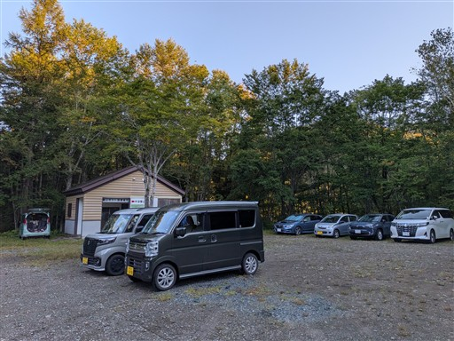
今回は中沼コースを歩く。
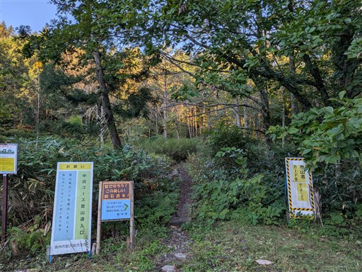
登山開始直後から沢のすぐ側を歩く。
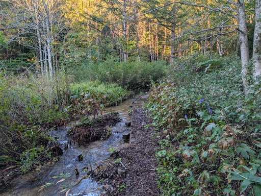
緩やかな山だが、最初だけ少し傾斜がある。
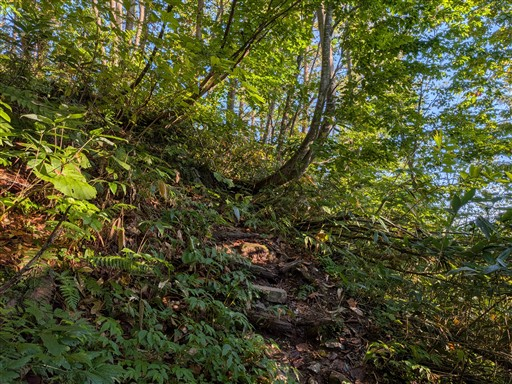
中沼に到着。水面に少し靄が出ている。
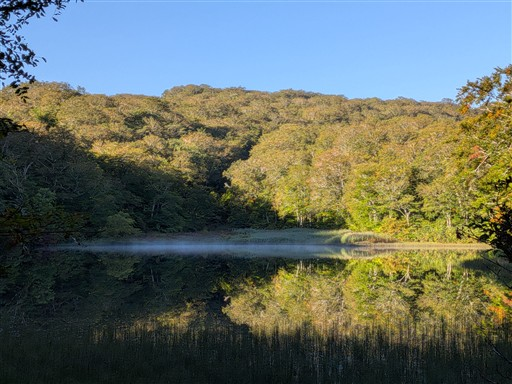
素晴らしい展望。水面はさざ波一つなく、遠くの美しい山の景色を映している。
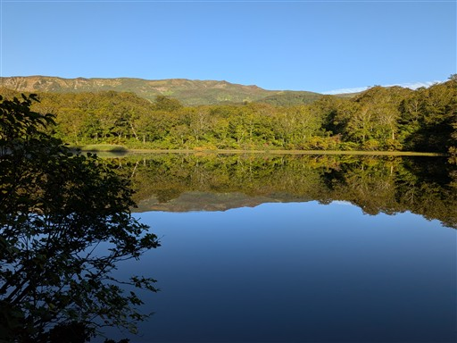
中沼のすぐ側に付けられた道を歩いていく。
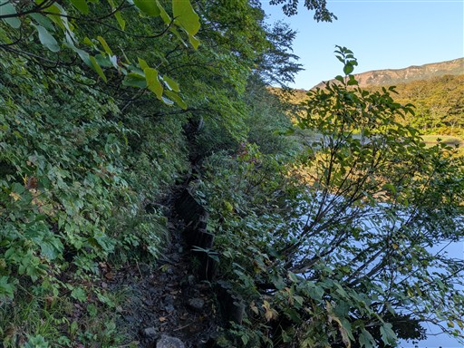
木道の上に泥が乗っている。イノシシが掘り返したのだろうか？
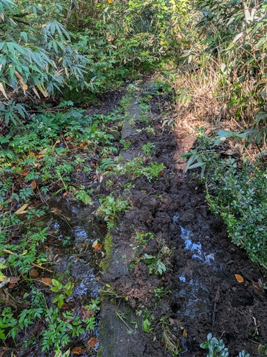
沢沿いの道が続く。
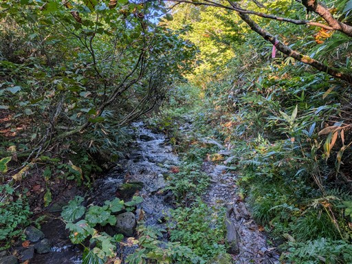
ところどころで沢を渡る。
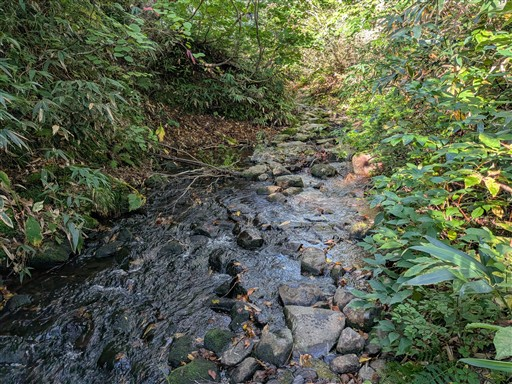
そして、ところどころに湿原が現れる。とにかく水と関わりの多い登山道だ。
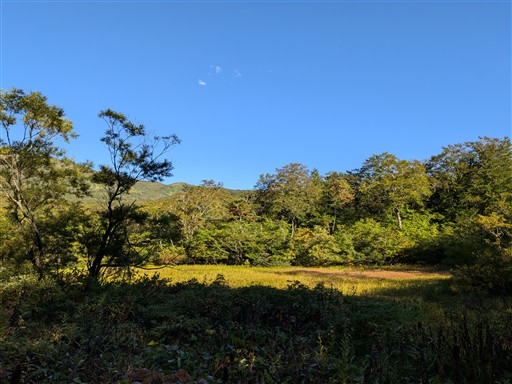
ミズバショウの残骸。水の多い場所なので、初夏はミズバショウをはじめ様々な花が咲きそうだ。
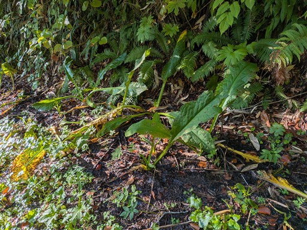
木道を歩く場所も多いがかなり傷んでいる。
そして濡れているので、とてつもなく滑る。
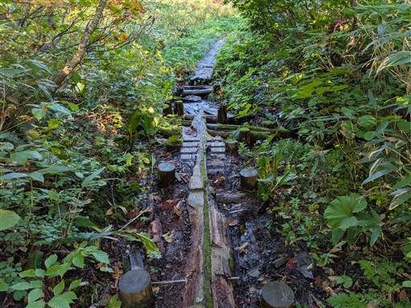
つぶ沼コース分岐に到着。
登山口からここまでの道は書かれているが、山頂までの道は書かれていない謎の地図がある。
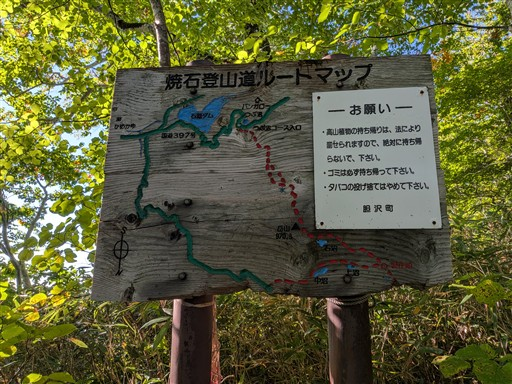
チョウジギクの花が咲いている。かなり独特の見た目。
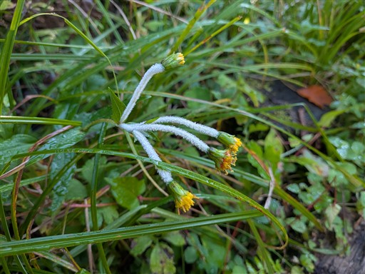
広場に到着。水場があり休憩できるようになっている。
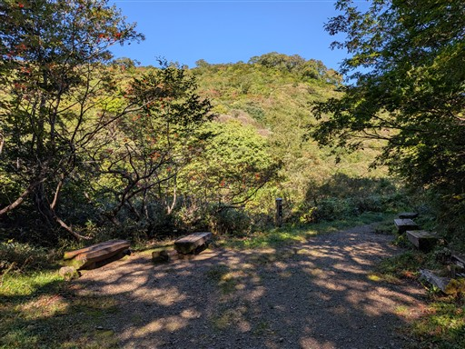
銀明水。岩の下から水が湧き出している。
柄杓がとても重い。超頑丈な柄杓だ。
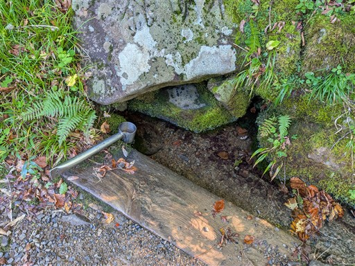
銀明水避難小屋。きれいで立派な小屋だ。
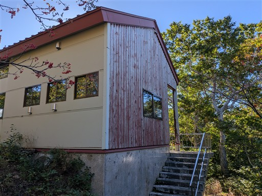
この辺りから視界が開けてくる。
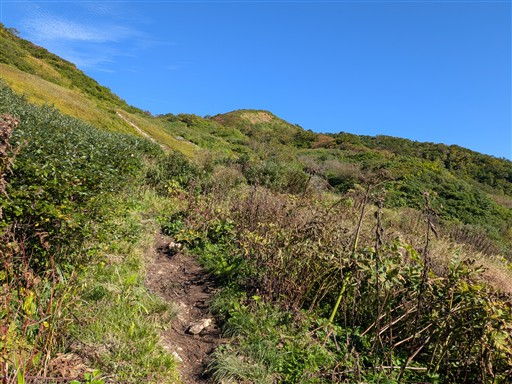
下界の景色も少しだけ見える。山体の大きな山なので下界はかなり遠い。
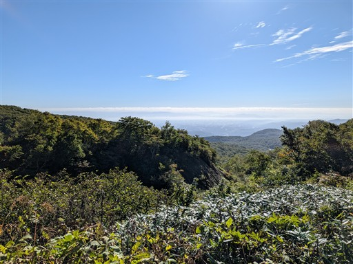
右手に小さな滝が見える。
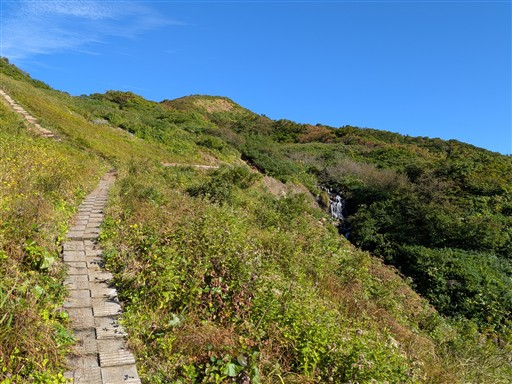
丸太の階段を登る。
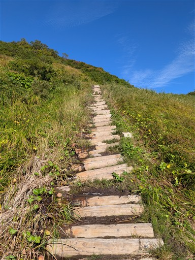
真赤なナナカマドの実が美しい。
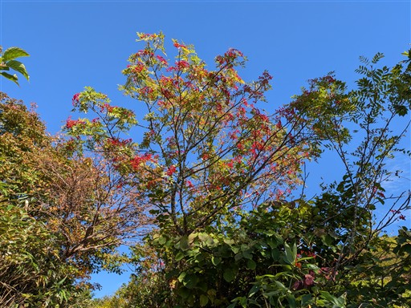
沢沿いというより、ほぼ沢の中を歩いていくルート。
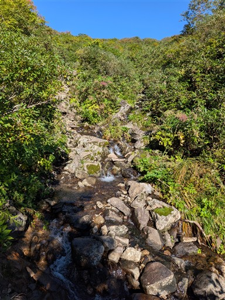
緩やかな傾斜の奥に平べったい山頂が見える。あれはどの辺りなのだろう？
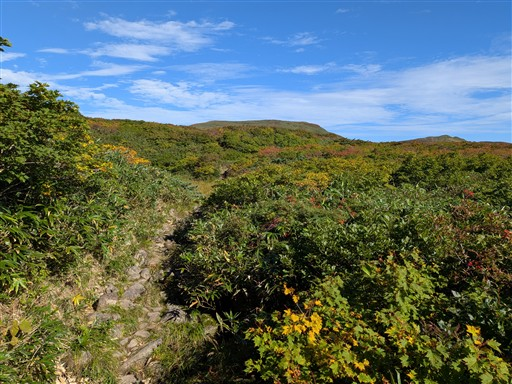
湿原と紅葉が始まった斜面。
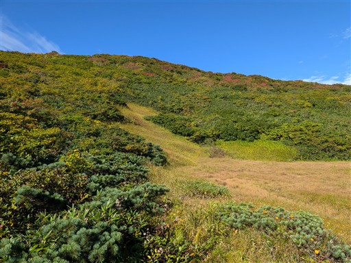
視界がどんどん広がってくる。
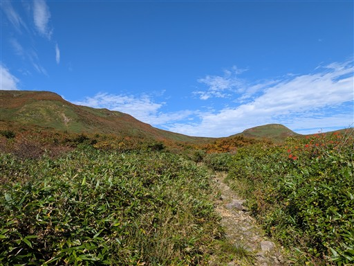
どこまでも広がる緩やかな斜面。
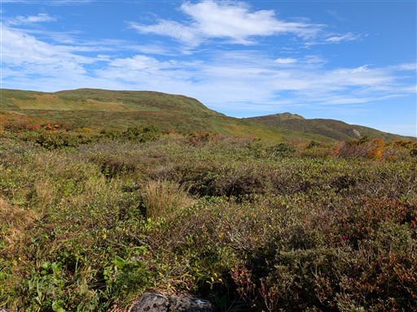
登った後に分かったが、目の前のピークが焼石岳山頂。
平原の中の小突起に見えて、ここからだと最高地点に見えない。
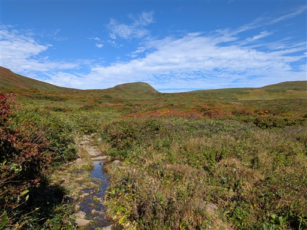
こちらは横岳方面。
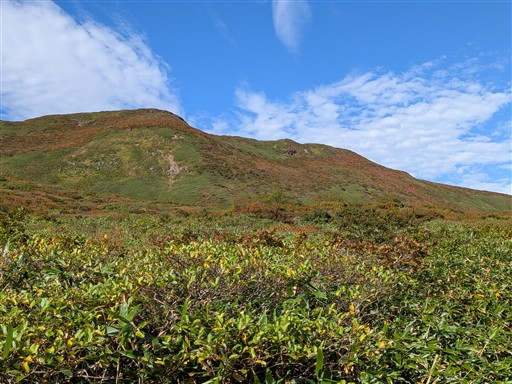
どこを見渡しても、ゆったりとした広い斜面が広がっている。
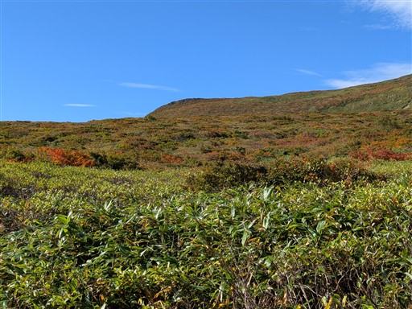
広い平原の中を景色を見ながらゆっくりと歩いていく。
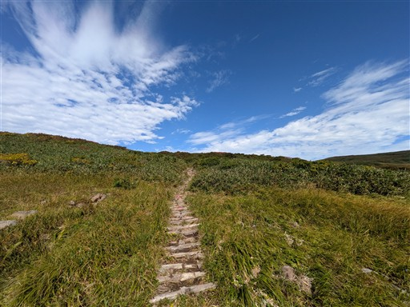
ここもナナカマドの実が赤い。
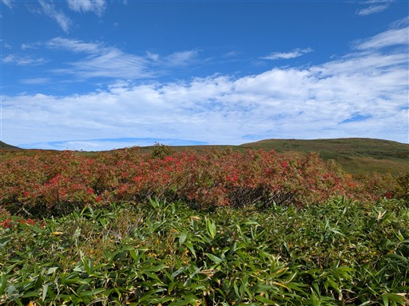
姥石平に到着。登山道の分岐点。
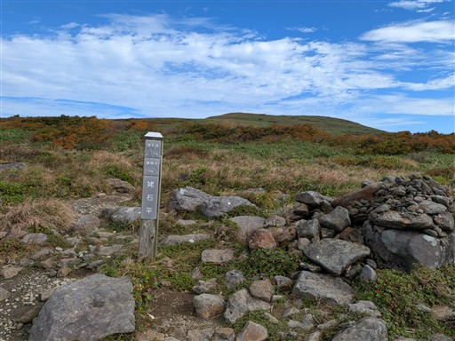
焼石岳がだいぶ近づいてきた。
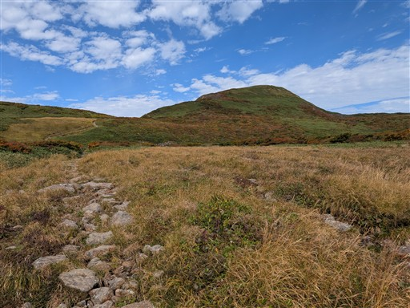
紅葉も始まっていて周囲は秋色だ。
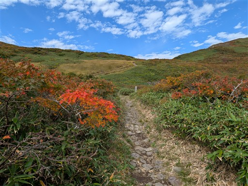
泉水沼に到着。
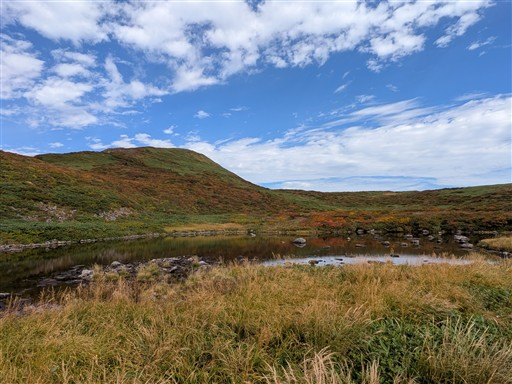
湖面が紅葉を映している。
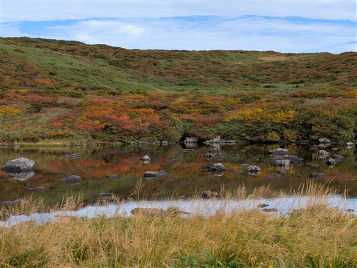
あの坂を登れば山頂だ。
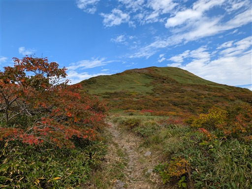
お椀状の緩やかな谷。底には池塘が見えている。
右手背後の山は鳥海山だ。
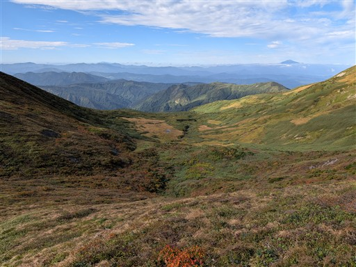
なんとハクサンイチゲの花が咲いている。
もう終わりかけだが、この季節で咲いているとは思わなかった。
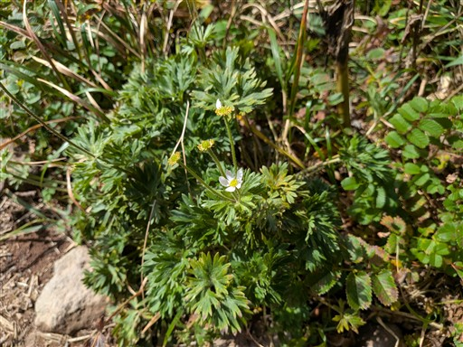
焼石岳の山頂に到着する。標高1547m。
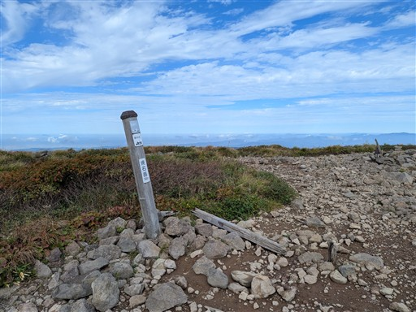
広い山頂は360度の展望台。土地勘がないので帰ってから調べたものも多いが、
東北の名峰が見渡せる。奥に見えているのは早池峰。
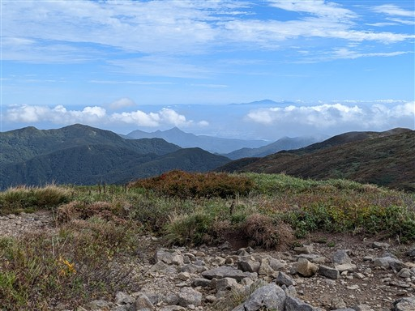
こちらは岩手山、左の方には秋田駒ヶ岳などが見えている。
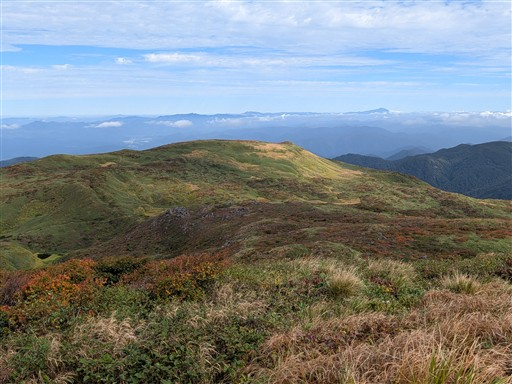
右手奥は栗駒山。本日は栗駒山にするか焼石岳にするか迷った。
混雑を避けてこちらを選んだが、予想通りの静かな山だ。
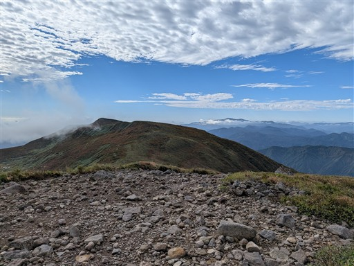
鳥海山はとにかくよく目立つ。この山だけはすぐに分かった。
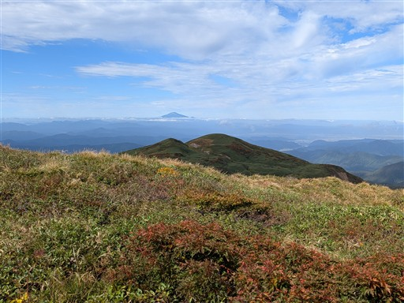
雲もきれいだ。まさに秋の空という感じ。
下側にも雲が湧いているのは夏っぽいが…
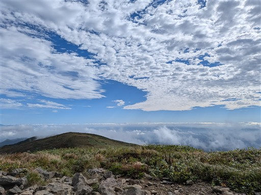
山頂にある一等三角点。今回の山旅は全て一等三角点の山だった。
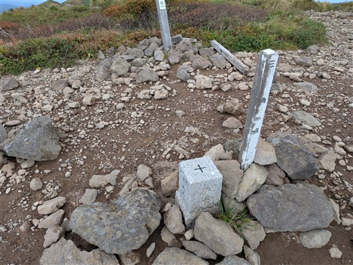
名残惜しいが下山を開始する。
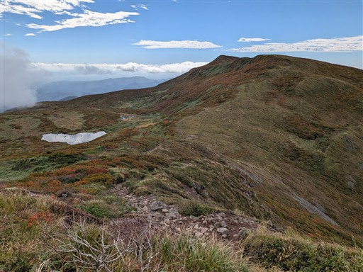
ここから横岳経由で帰ろうと思ったが、なんとロープが張られている。
これでは立ち入れない。残念だが、元来た道を下山する。
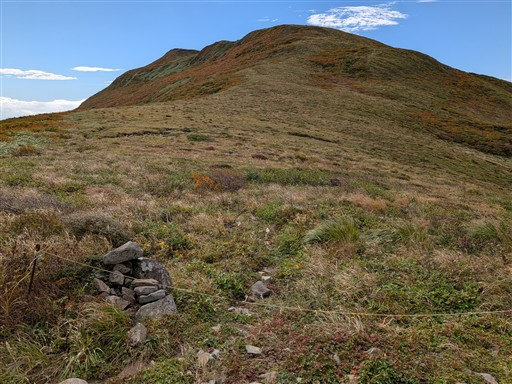
この紅葉の素晴らしい稜線を歩けると期待していたのだが…
泉水沼まで戻ってくる。
相変わらず周囲は美しい景色が広がっている。
下りでも足を止めて景色に見入る。
ハクサンフウロの花が咲いている。
こちらはイワイチョウ。こんな初夏の花がまだ咲いている。
この山は花の名山でもある。
銀明水で休憩をとる。
この山を管理している人に出会い、ルートのことや東北の山のことなど色々教えていただく。
小さなキノコが群生している。
川の中に大きめの魚がいる。かなり見えにくいが。
駐車場に無事下山。
焼石岳は思っていたよりもはるかに素晴らしかった。
山頂周辺に広がるゆったりとした風景や紅葉は格別だったし、何より静かな山だった。
花の季節にコースを変えて、再訪したいと思える山だ。
これで今回の旅行は終了。21日は完全に雨雲を回避しきれなかったが
十分に東北の素晴らしい景色を堪能できた旅行だった。